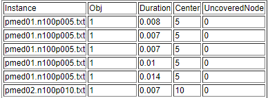
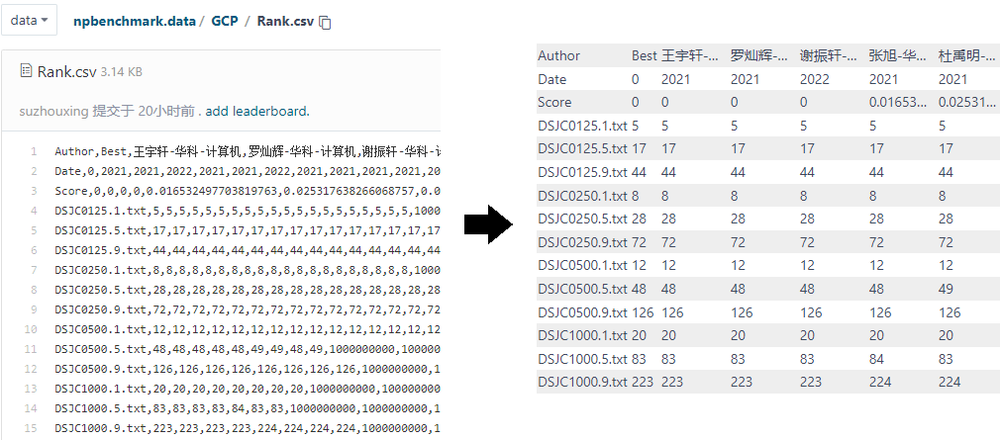

SmartLab Challenge - ReadMe
与本科数据结构和算法设计与分析课程中学习的 P 问题不同, NP 难组合优化问题的计算复杂度随问题规模增长及其迅速. 因此, 在具有现实意义的问题实例上, NP 难组合优化问题的求解算法不仅有对错之分, 还有优劣之分. 由于 NP 难问题的计算复杂性, 有实际应用价值的算法通常不像 P 问题的求解是一个确定的过程, 得到正确的结果后退出. 相反地, NP 难问题的优化算法需要在计算时间与结果优度之间寻找合适的平衡点, 因此往往使用具有随机性的迭代优化的启发式算法. 为确保结果的可重现性, 启发式算法通常需要支持设置随机种子, 而其停止条件通常为由用户指定计算时间上限, 以避免对庞大的解空间进行永无止尽的探索. 此外, 相比于 P 问题求解算法的简明扼要, NP 难问题的求解算法往往是个庞大的工程, 同时有可能作为子模块接入到更复杂的系统中, 因此还需要满足软件工程的要求. 下面, 我们将以中心选址问题为例, 简单介绍本 NP 难组合优化问题算法测试平台的基本功能与使用方式.
问题描述
本平台支持的 NP 难问题清单参见 http://suzhouxing.gitee.io/techive/tags/Challenge/. 各问题描述页面内的 "参考文献" 一节给出了相对高效的启发式算法的学术论文, 一般直接重现第一篇能求得较好的计算结果. 请仔细阅读问题描述页面内的 "提交要求" 一节, 不符合要求的提交不会进行测试.
SDK
算法接口概述
在问题描述页面的 "提交要求" 一节可以找到中心选址问题求解算法的 SDK 下载链接 https://gitee.com/suzhouxing/npbenchmark/tree/main/SDK.PCP. SDK 一般包含 3 个源文件, 其用途与内容如下:
- Main.cpp (禁止修改).
- 算法可执行文件调用入口.
- 所有问题均包含该文件.
- 用于平台调用算法进行测试.
loadInput与saveOutput函数为符合提交要求的算例读取和结果输出函数.test函数为测试程序入口, 可参考main函数中的注释从文件读取算例以便在本地批量测试.
- PCenter.h (禁止修改).
- 算法函数接口.
- 根据问题名称命名.
- 定义 API 以便将该问题的求解算法作为子模块由其他系统调用.
PCenter类为输入数据.Centers类为输出数据.solvePCenter函数为算法函数接口.- 算法应根据参数
input给出的输入数据进行求解. - 将计算结果保存至参数
output中. - 使用参数
isTimeout函数对象判断是否超时. - 使用参数
seed设置随机种子.
- 算法应根据参数
- PCenter.cpp (可修改).
- 算法函数实现.
- 与算法函数接口头文件名称相同.
- 填写
Solver::solve函数实现求解算法.
- 自行添加其他源文件.
- 后续平台将变更为提交源码自动编译测试, 请保持工程目录结构, 包含头文件时请使用相对路径.
示例代码详解
求解接口 solvePCenter 函数中仅一行 Solver().solve(output, input, isTimeout, seed);, 所有变量均应定义于 Solver 类的作用域内, 禁止出现全局变量, 否则不满足可并发和可重入的要求. Solver::solve 函数中, 首先使用 initRand(seed); 初始化随机数生成器, 然后自行填写求解算法代码.
与大多数问题的示例代码不同, 中心选址问题的 SDK 由于已经内置了优化转判定的求解框架, Solver::solve 函数相对更加复杂. 其中 coverAllNodesUnderFixedRadius 函数与其他问题的 Solver::solve 函数内容相似, 为判定版本问题的求解算法, 也是该问题的算法内核. Solver::solve 函数首先调用一次判定版本的算法完成初始半径下的中心选择, 然后不断缩小覆盖半径. 每次缩小覆盖半径时增量移除每个候选中心无法覆盖到的客户, 得到新的判定问题.
coverAllNodesUnderFixedRadius 函数从所有节点中随机挑选中心, 直到 isTimeout 函数对象报告超时或达到输入数据指定的中心数. 注意, 测试平台的超时判断机制使用现实世界时间, 而非 CPU 时间. 显然, 该过程难以得到可行的中心选址方案, 需要将其替换为高效的优化算法.
在求解过程中或完成后, 可以使用标准错误输出 cerr 打印调试信息, 而不会影响测试平台读取计算结果. 建议提交前屏蔽相关代码以提高算法执行效率.
提交
系统处于空闲状态时, 每隔 15 分钟检查一次邮箱 (避免测试过程中进行下载邮件等操作占用 CPU 影响他人的测试结果). 按照问题描述页面的 "提交要求" 一节成功发送邮件并被系统拉取后, 将收到系统的自动回复, 提示当前待测试的提交数. 一次拉取若发现同一姓名或邮箱地址多次提交了同一问题的求解算法, 仅对最后一次提交的版本进行测试. 每个提交在系统中可能经历 3 种状态, 分别是已拉取待测试 (Pending), 正在测试 (Running), 测试完成 (Finished). 可在 https://gitee.com/suzhouxing/npbenchmark.data/blob/data/Queue.md 页面查看平台上测试任务的排队状态.
⯈ 处理 SIGINT 信号
如确实有需要, 可参考如下代码设置中断信号的响应函数, 以便在收到信号时保存解或设置结束求解的标记位. 由于相关接口属于 C 语言标准库, 不支持闭包, 必须使用全局变量, 不满足提交要求, 因此强烈建议不使用该机制. 1
2
3
4
5
6
7
8
9
10
void signalHandler(int) {
// save solution or set stopping flag.
exit(0);
}
int main(int argc, char* argv[]) {
signal(SIGINT, signalHandler);
return 0;
}
后续采用源码提交后, 将为 solve 函数添加报告计算结果的接口, 使用更精确的方式记录求到最优解的时间, 同时返回是否可以停止求解的建议 (例如已求得最优解可提前退出节约时间). 后续将对测试用例进行小幅随机等价变换 (重编号, 添加冗余, 化简等), 以避免针对算例过度调参.
所有问题的测试用例均划分为 3 个难度级别. 平台会统计每个难度级别所有算例上的: 命中排行榜上的最优结果的比例 (越高越好), 求得可行解的比例 (越高越好), 超时比例 (越低越好) 等指标. 简单难度的算例上述指标达到预设的阈值后才会测试更困难的算例, 否则将停止测试以节约时间 (因为困难算例大概率计算结果会更差).
测试完成后, 将自动回复如下图所示的详细计算结果.  其中第 1 列为算例名, 第 2 列为目标函数值, 第 3 列为算法从启动到退出的耗时. 之后若干列每个问题均不一样, 主要提示约束违反情况. 例如, 中心选址问题中, Center 列表示输出的中心数, 若大于输入数据规定的数量则为不可行解, 目标函数值将被设置为充分大数; UncoveredNode 列表示未覆盖的客户数, 若大于 0 则为不可行解, 目标函数值将被设置为充分大数.
排行榜
目前提供 Rank 和 Leaderboard 两种计算结果统计视图, 导航页面见 https://gitee.com/suzhouxing/npbenchmark.data/tree/data. Rank 视图以算例为中心, 列出每个算例上的最好结果 (前 10 名). Leaderboard 视图以提交为中心, 对每个问题的每个提交在所有算例上的整体结果进行评分与排序.
由于目前使用的托管平台不支持 csv 文件的渲染, 可以下载后使用 Excel 等软件打开. 也可以参考 (Gitee 渲染 CSV 文件) 将其格式化以直接在网页中查看, 得到下图所示的展示效果. 